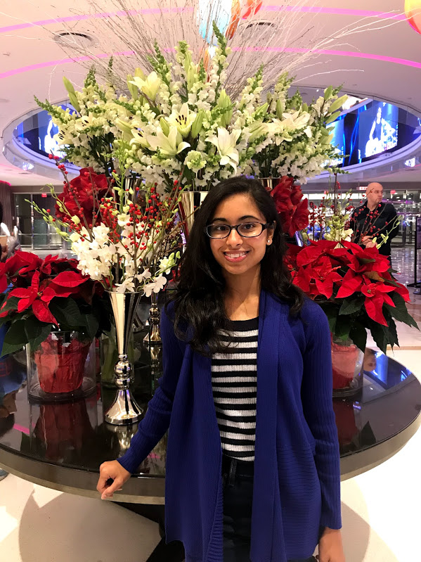

I'm a beginner web developer who is passionate about coding and is just starting her journey into the world of web development.
I recently graduated from Rutgers University with a Bachelor's in Public Health. I'm currently an Events and Program Management Intern
at Move For Hunger, a hunger relief nonprofit. In my free time, I enjoy fashion, traveling, music, fitness, and podcasts.